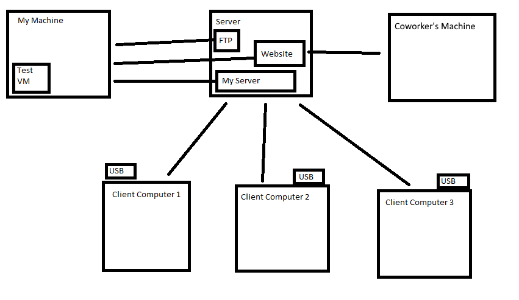

IT Automation Suite
This project was an attempt to automate the bulk of the technical work required by Clemson's CORE IT department. Regrettably, CCIT (Clemson University's main IT entity) changed their backend systems thereby making this project impossible to complete.
Approximate Start Date: May 2017
Approximate End Date: June 2019
Source code: Due to the sensitive nature of parts of the project, please contact me for access to the source code.
How it worked
- IT worker creates ticket in CCIT's systems
- IT worker plugs special USB stick into the computer that needs software installed/updates/malware scan/etc
- The USB stick boots the client program
- The client connects/authenticates with the server securely (over TLS)
- The server looks up the ticket details in CCIT's system and scrapes the data that contains the required work
- The server communicates these requirements back to the client
- The client maps the network shares with the required software, runs checks, then installs the software
- The client notifies the server that the work is done
- End communication
In the later stages of the project, the clients were able to automatically update themselves after connecting with the server.
The server also hosted a webpage that listed out the status of every client that was currently running.
Finally, I automated the script development pipeline. I could develop a script to install a software and it would be tested on a virtual machine before rolling out to the server.
How the network architecture looked:
